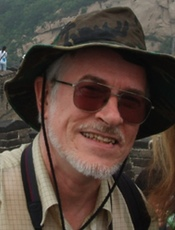
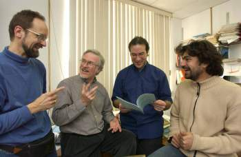

Statut:
Téléphone:
Courriel:
|
Professeur Titulaire
Université de Montréal
Département de sciences biologiques
Bureau: (514) 343-7591
Pierre.Legendre@umontreal.ca
|

|
Prix et Distinctions
|
Date de publication: 6 juillet 2012
Auteurs: Pierre Legendre et Louis Legendre
Maison d'édition: Elsevier Science BV, Amsterdam.
ISBN-13: 978-0444538680
|
Paru en janvier 2011
Auteurs: Daniel Borcard, François Gillet et Pierre Legendre
Maison d'édition: Springer, collection "Use R!"
ISBN 978-1-4419-7975-9
e-ISBN 978-1-4419-7976-6
|
Membres du labo

De gauche à droite: Daniel Borcard, Pierre Legendre, Pedro Peres-Neto et
Stéphane Dray.
Photo: Bernard Lambert, Direction des communications,
Université de Montréal.
- Daniel Borcard (daniel.borcard@umontreal.ca), chercheur sénior
- Alix Boc (alix.boc@umontreal.ca), chercheur postdoctoral
- Philippe Casgrain (casgrain@exchange.umontreal.ca), bio-informaticien
- Jean-Martin Chamberland (jean-martin.chamberland@umontreal.ca), auxiliaire de recherche
- Guillaume Guénard (guillaume.guenard@gmail.com), chercheur postdoctoral
- Steven C. Walker (steven.walker@umontreal.ca), chercheur postdoctoral
Documents
Entrevue avec Louis et Pierre Legendre
Lexique anglais-français d'écologie numérique et de statistique
Bibliographie ACC: utilisation de l'ACC dans de nombreuses publications, un travail de John Birks.
Résumé de Carrière
Chercheur postdoctoral au Genetiska Institutionen, à Lunds Universitet, Suède, en 1971-72. Il est recruté par l'Université du Québec à Montréal en 1972, où il est d'abord Associé de recherche, puis Directeur de recherche au Centre de recherche en sciences de l'environnement, et finalement Professeur au Département de physique en 1980. En 1980, il devient Professeur agrégé au Département de sciences biologiques de l'Université de Montréal, puis Professeur titulaire en 1984.
- Lauréat du prix Michel-Jurdant 1986 (sciences de l'environnement) de
l'Association canadienne-française pour l'avancement des sciences (ACFAS).
- Boursier Killam du Conseil des Arts du Canada pour 1989-91
- élu membre de la Société royale du Canada (Académie des sciences) en 1992.
- Lauréat du Distinguished Statistical Ecologist Award décerné par le International Congress of Ecology en 1994 et de la médaille Romanowski (sciences de
l'environnement) de la Société royale du Canada en 1995.
- Prix Marie-Victorin du Gouvernement du Québec en 2005.
- Officier de l'Ordre national du Québec en 2007
- Lauréat du Prix 2011 d'excellence en enseignement, catégorie des professeurs titulaires, décerné par l'Université de Montréal
- Lauréat du Prix 2011 d'excellence en enseignement, catégorie des professeurs du secteur sciences, décerné par la Faculté des Arts et des Sciences de l'Université de Montréal.
Profil académique